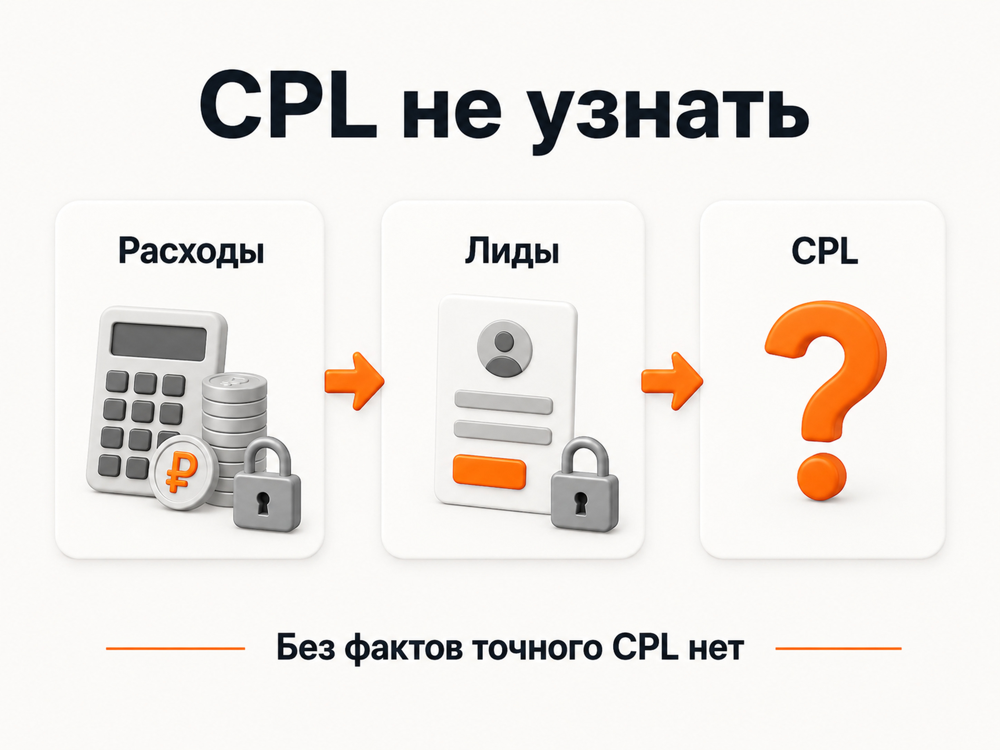
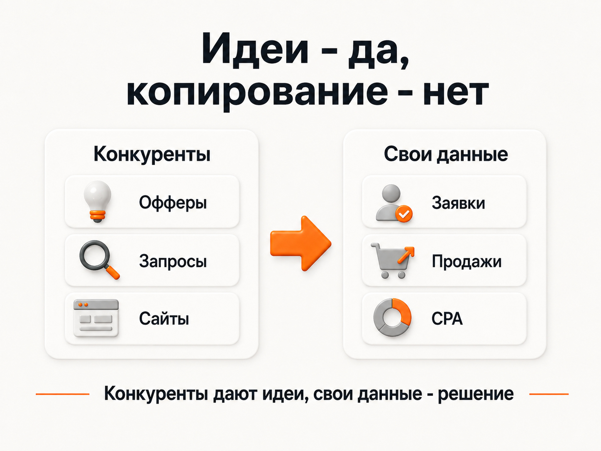

Блог о платном трафике
Анализ рекламы конкурентов: что действительно можно узнать
Анализ рекламы конкурентов помогает понять, как выглядит рынок: какие предложения используют другие компании, по каким запросам рекламируются, куда ведут пользователей и какие креативы запускают.
Но со стороны нельзя достоверно узнать, сколько конкурент реально тратит на рекламу, сколько получает заявок, во сколько ему обходится клиент и какая реклама приносит продажи.
Сервисы конкурентного анализа могут показывать такие цифры, но это расчётные оценки, а не статистика из рекламного кабинета конкурента. Например, сам Keys.so называет отображаемый рекламный бюджет ориентировочным и рассчитывает его через прогнозные показатели Яндекс Директа.
Поэтому я бы использовал анализ рекламы конкурентов как дополнительный источник информации о рынке, но точно не как основу для своей рекламной стратегии.
Что можно посмотреть у конкурентов
Для анализа существуют специальные сервисы. Например, Keys.so позволяет искать объявления в Яндекс Директе и РСЯ, смотреть запросы и сравнивать сайты. Есть SpyWords и другие инструменты с похожей логикой.
Через них можно получить информацию о том:
- по каким поисковым запросам встречалась реклама сайта;
- какие объявления сервис обнаружил;
- какие заголовки и предложения использует компания;
- какие креативы встречались в РСЯ;
- на какие страницы ведёт реклама;
- насколько пересекается семантика нескольких сайтов.
У Keys.so, например, есть отдельный инструмент с объявлениями РСЯ. Сам сервис показывает, что собирает объявления и хранит собственную базу обнаруженных рекламных материалов.
Это нормальные данные для первичного исследования ниши. Можно увидеть, какие компании активно рекламируются, какие услуги они продвигают и как выглядит предложение на рынке.
Проблемы начинаются, когда из этих данных пытаются сделать выводы об эффективности рекламы.
Можно ли узнать рекламный бюджет конкурента
Точно - нет.
Для этого нужен доступ как минимум к статистике рекламного аккаунта конкурента. Сторонний сервис такого доступа не имеет.
Поэтому показатель «бюджет конкурента» обычно представляет собой математическую оценку. Например, Keys.so объясняет, что рассчитывает ориентировочный месячный бюджет на основании запросов, стоимости клика, прогнозного CTR и частотности. Причём расходы на РСЯ в этот показатель не включаются, потому что у сервиса нет необходимых данных о стоимости показов и кликов в Рекламной сети.
SpyWords работает по похожему принципу. В актуальном обзоре eLama бюджет прямо называется приблизительной оценкой, а сами данные не рекомендуют использовать для точного медиапланирования.
То есть вы смотрите не банковскую выписку конкурента и даже не его статистику из Директа. Вы смотрите результат расчёта модели.
Реальный расход может существенно отличаться. На него влияют стратегии, настройки кампаний, корректировки, аудитории, качество объявлений, ограничения бюджета, фактический CTR, конкуренция в конкретный момент и множество других параметров.
Поэтому строить собственный рекламный бюджет по принципу «сервис показывает, что конкурент тратит 300 000 рублей, значит мне нужно столько же» я бы не стал.
Для оценки собственного бюджета логичнее использовать реальные данные своей рекламы либо прогноз Яндекс Директа для своих запросов и региона.

Можно ли узнать стоимость заявки конкурента
Нет. И здесь ограничение ещё жёстче.
Чтобы рассчитать стоимость заявки, нужно знать хотя бы две цифры:
CPL = расходы на рекламу / количество лидов
У стороннего сервиса нет ни точного расхода рекламодателя, ни количества полученных им заявок. Он не видит его формы, звонки, цели Метрики, CRM и фактические результаты рекламных кампаний.
Поэтому достоверно определить CPL конкурента невозможно.
То же самое касается CPA, стоимости продажи, конверсии сайта, ROAS, ДРР и других показателей, связанных с реальным результатом бизнеса.
Даже если где-то показывается приблизительная посещаемость сайта, из неё нельзя восстановить экономику рекламы.
Подробнее - в статьях «CPA в Яндекс Директе: что это и как считать стоимость конверсии» и «Как оценить эффективность Яндекс Директа: заявки, продажи и окупаемость».

Почему объявления конкурентов тоже нужно анализировать осторожно
Предположим, вы нашли пять рекламных объявлений конкурента. У одного красивый баннер. У второго хороший заголовок. Третий обещает бесплатную консультацию.
Возникает желание взять наиболее интересные идеи и повторить их у себя. Но есть проблема: вы не знаете, работают эти объявления или нет.
Сам факт существования объявления говорит только о том, что рекламодатель его запустил и сервис смог его обнаружить.
Вы не знаете:
- какой у объявления CTR;
- сколько денег оно потратило;
- сколько принесло заявок;
- какого качества были эти заявки;
- были ли продажи;
- отключил ли рекламодатель этот вариант после неудачного теста.
По красивому баннеру невозможно определить его эффективность. То же самое относится к тексту. Формулировка может выглядеть удачной, но приводить дорогие или нецелевые обращения.
Поэтому я не вижу большого смысла механически копировать объявления конкурентов. Гораздо полезнее посмотреть на них как на исследование рынка.
Что действительно полезно искать у конкурентов
Я бы смотрел в первую очередь не на отдельные картинки и заголовки, а на общие закономерности.
Например, если вы рекламируете ремонт квартир, можно посмотреть, чем компании пытаются конкурировать между собой:
- ценой;
- сроками;
- гарантией;
- фиксированной сметой;
- дизайном в подарок;
- поэтапной оплатой.
После нескольких сайтов становится понятно, какие аргументы используются практически всеми и чем рынок уже перегружен.
Затем стоит посмотреть посадочные страницы. Какие услуги вынесены отдельно? Как устроен первый экран? Есть ли калькулятор? Какие доказательства используются? Какие вопросы закрываются до формы заявки?
Здесь конкурентный анализ действительно полезен. Он показывает средний уровень рынка и помогает понять, чем собственное предложение отличается от остальных.
Но ответом должно быть не копирование чужого оффера, а работа со своим продуктом. Об этом - в статье «УТП в маркетинге: что это и как составить сильное предложение».
Как анализировать рекламу конкурентов на практике
Я бы разделил такой анализ на несколько простых этапов.
Сначала найдите 5-10 прямых конкурентов. Не крупнейшие федеральные компании вообще, а бизнесы, которые реально борются с вами за одного клиента в том же регионе и ценовом сегменте.
Затем посмотрите их рекламу и сайты. Сервисы вроде Keys.so можно использовать, чтобы быстрее собрать найденные объявления, запросы и креативы.
После этого выпишите не сами тексты объявлений, а повторяющиеся идеи: цены, гарантии, сроки, услуги, акции, способы обращения, структуру посадочных страниц.
Отдельно найдите отличия. Если все конкуренты говорят одно и то же, ещё одно объявление с таким же обещанием вряд ли даст вашему бизнесу преимущество.
И только после этого формируйте собственные гипотезы.
Конкуренты: почти все рекламируют низкую цену.
Ваше преимущество: выше цена, но фиксированная смета без доплат.
Гипотеза: вместо попытки конкурировать скидкой сделать главным аргументом прозрачную итоговую стоимость.
Дальше эта гипотеза проверяется уже вашей рекламой. Именно здесь появляется информация, которой нет ни в одном сервисе конкурентного анализа: реальные клики, заявки, стоимость обращения, качество лидов и продажи.

На какие данные ориентироваться после запуска рекламы
После запуска основной источник информации - собственная статистика.
Нужно смотреть:
- какие запросы и аудитории приводят клиентов;
- какие объявления дают нормальные обращения;
- сколько стоит заявка;
- какого качества приходят лиды;
- какие посадочные страницы лучше конвертируют;
- сколько заявок превращается в продажи.
Именно свои данные позволяют решить, какой баннер оставить, какой текст отключить и куда перенести рекламный бюджет.
Порядок проверки кампаний описан в статье «Аудит Яндекс Директ: что проверить и как найти проблемы в рекламе».
У конкурента результат может быть совершенно другим. У него другая узнаваемость, цена, сайт, отдел продаж, маржинальность и допустимая стоимость привлечения клиента.
Поэтому успешную рекламную систему невозможно скопировать по внешним признакам.
Стоит ли вообще анализировать рекламу конкурентов
Стоит, если правильно понимать задачу.
Конкурентный анализ помогает увидеть рынок, предложения, семантику, посадочные страницы и рекламные подходы других компаний.
Но не нужно пытаться получить из него то, чего в открытых данных нет.
Точный рекламный бюджет, CPL, CPA, конверсию, количество продаж и окупаемость конкурента сторонний сервис вам не покажет. Для этого нужен доступ к его рекламному кабинету, аналитике и бизнес-данным.
Поэтому я бы потратил ограниченное время на изучение конкурентов, зафиксировал интересные идеи и дальше переключился на собственную рекламу.
В конечном счёте значение имеет не то, какой баннер запустил конкурент, а сколько вам самим стоит привлечение реального клиента.